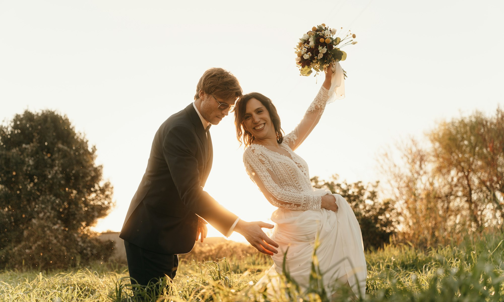
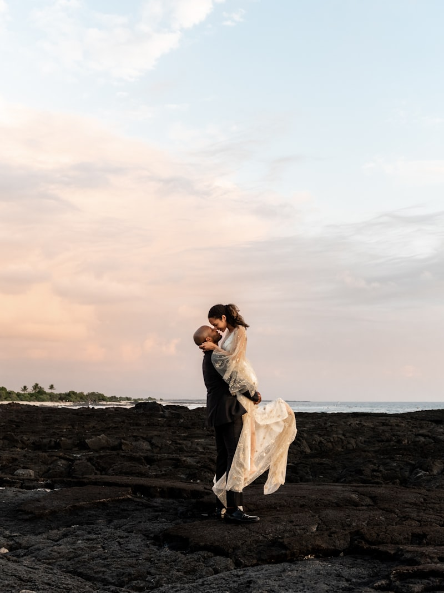
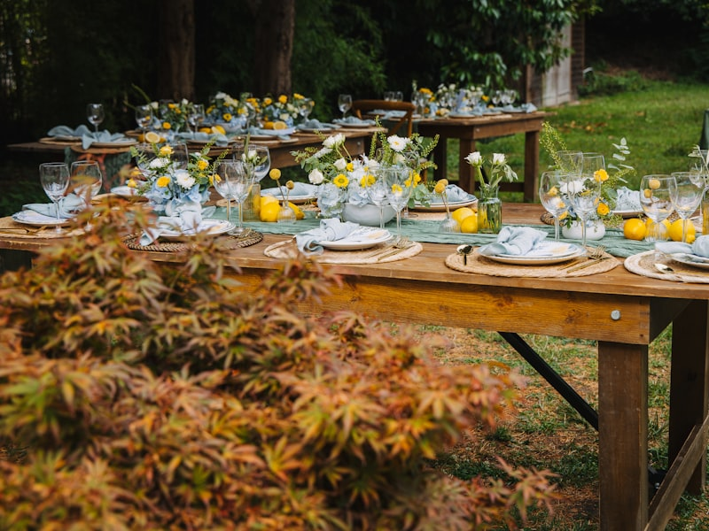
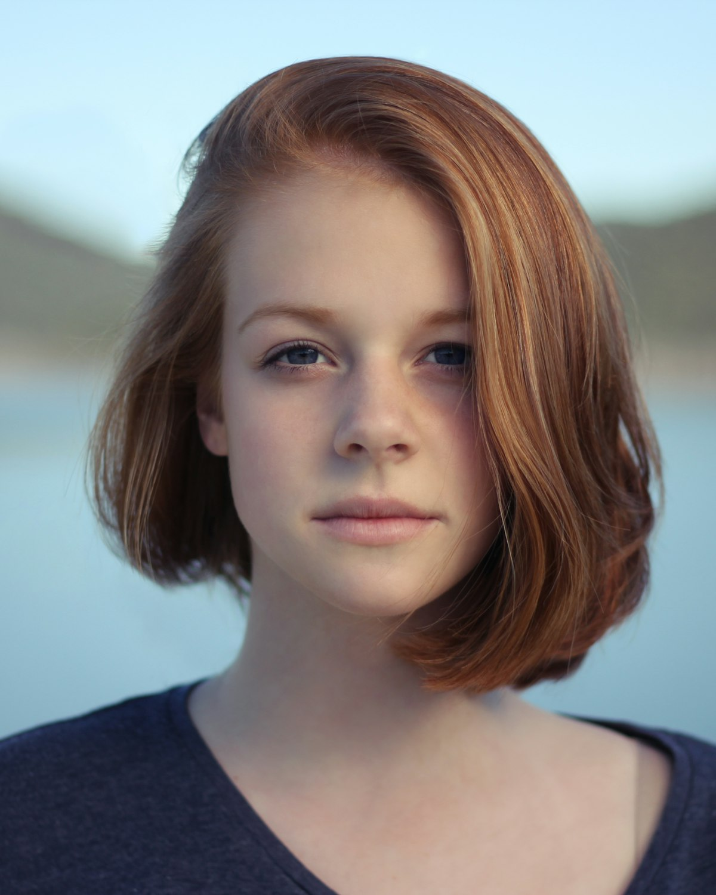
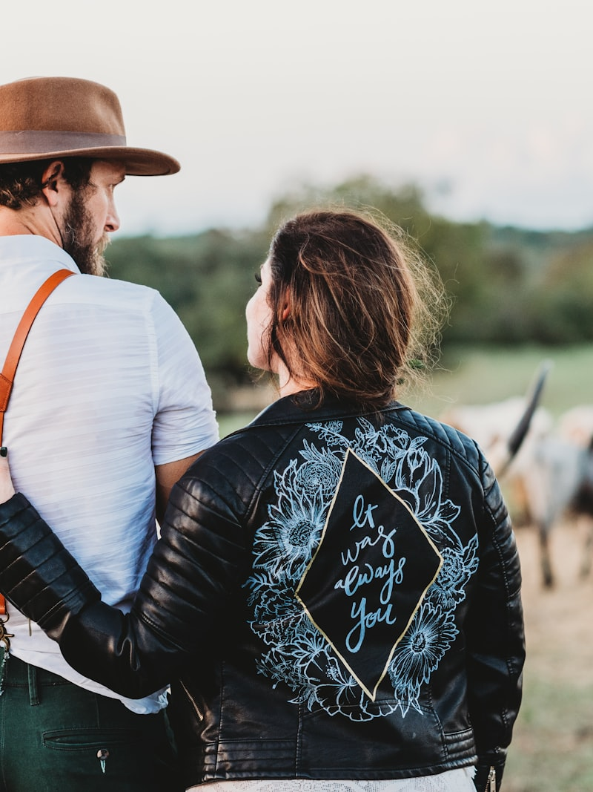

for the wild at heart lovers
Based in Brussels and always ready to travel wherever your story leads, I specialize in capturing the quiet, unfiltered moments that make your love yours. Whether it's a windswept mountain elopement, a historic chateau ceremony, or a cozy engagement session in a cobblestone city, I approach each shoot with intention, curiosity, and deep respect.
Learn More



Hey, I'm Elise — architecture admirer, light chaser, and big fan of spontaneous detours down unknown streets. I've always believed there's something sacred about human connection, and I bring that energy into every love story I photograph.
I'm here for the couples who light up in ancient cities — who choose quiet historical ruins over crowded halls, and would rather wander a cobblestone alleyway than walk down an aisle. My style is part documentary, part editorial, with an emphasis on the real, raw moments.
from past couples
"Elise captured the essence of our day so perfectly. Looking at the photos feels like reliving the exact emotions we felt. The light, the mood, the quiet moments — everything was documented beautifully. We couldn't have asked for a better storyteller."